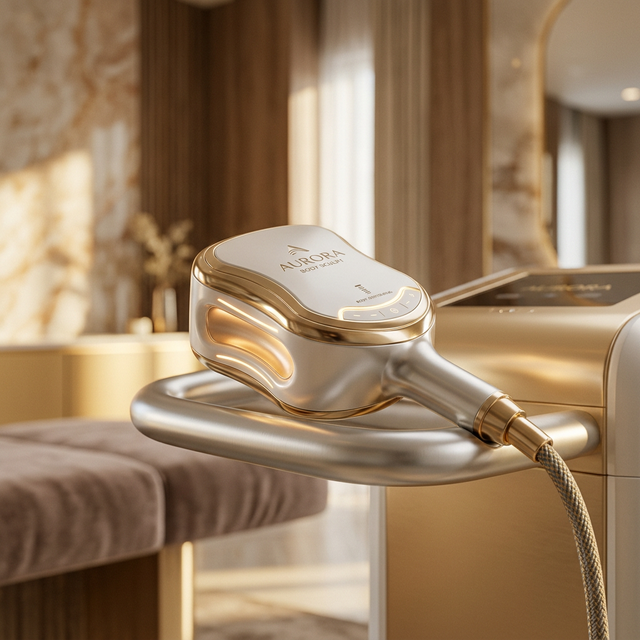
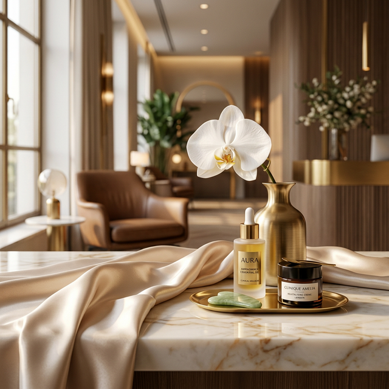

Experience precise, non-invasive fat reduction. Our advanced technology targets stubborn deposits to reshape your silhouette, delivering visible, lasting results without incisions, downtime, or surgical procedures.
It is a professional treatment that uses advanced ultrasound energy to precisely target and eliminate stubborn fat cells. This process naturally reduces fat deposits in areas like the chin, arms, belly, and back while simultaneously stimulating collagen to tighten the skin. It also significantly improves the appearance of cellulite, creating a smooth, sculpted silhouette without needles, incisions, or downtime.

Our focused ultrasound technology precisely targets and destroys the fat cells responsible for a double chin. This process delivers an immediate lift, creating a defined V-shape jawline while naturally flushing out fat for long-lasting results. It permanently eliminates fullness and tightens the skin, providing a sculpted, sharp appearance without surgery or downtime.
This treatment uses focused ultrasound to permanently destroy stubborn fat cells in the upper arms and inner thighs. By targeting deep fat deposits, it reduces volume while simultaneously smoothing "orange peel" cellulite texture. The process tightens sagging skin and tones the area, leaving your muscles more defined and your skin firm. As your body naturally flushes out the fat, you achieve leaner, smoother, and perfectly contoured limbs without surgery or downtime.

This treatment uses focused ultrasound to permanently destroy stubborn fat cells in the upper arms and inner thighs. Beyond reducing volume, it is highly effective at eliminating the "orange peel" texture of cellulite by smoothing out the underlying fat structure. The process simultaneously tightens sagging skin and improves tone, leaving the area firmer and more defined. As your body naturally flushes out the destroyed fat cells, you are left with lean, smooth, and perfectly contoured limbs without surgery or downtime.